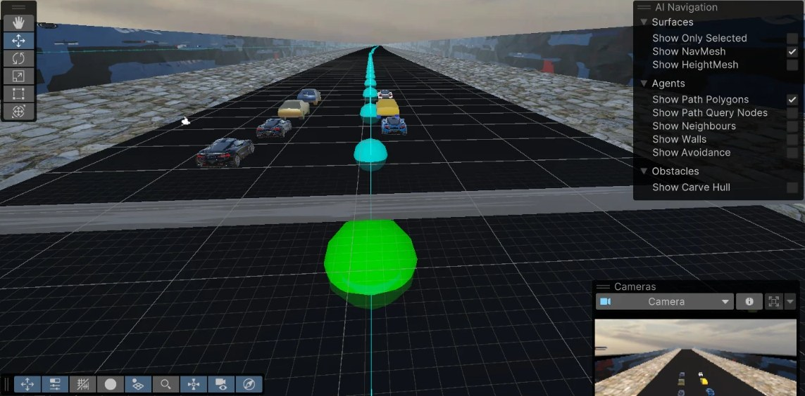

AI가 8km 앞으로 순간이동원인: 체크포인트를 잇는 직선이 도로가 아닌 허공을 지남. 도로를 따르는 경로(웨이포인트 679개)로 교체.
한쪽 차 모델만 자주 넘어짐원인: 모델 두 종류에 같은 무게중심 값. 바퀴 높이 기준 계산으로 수정.
AI 평균 속도 약 130km/h원인: 직선에서도 브레이크, 앞차 뒤에서 줄지어 감속. 고친 뒤 평균 약 240km/h.


Formula One World Championship
수동 변속으로 차를 몰아 AI 차량 6대와 5바퀴를 겨루는 레이싱 게임입니다.
- Unity 6
- C#
- RPM-토크 곡선, 기어별 최고 속도, 회전수 제한기, 트랙션 컨트롤
- 부스터, 드리프트, 실시간 순위, 0→100km/h 기록 측정
- AI 차량의 코너 감속, 충돌 회피, 이탈 복구
확인 Unity에서 실제로 씬을 실행하는 자동 플레이 테스트 53개. 고칠 때마다 같은 테스트로 다시 확인했습니다.


Unity에서 실행한 주행 화면. 왼쪽에 속도, RPM, 기어, 부스트가 있고 오른쪽에 랩, 시간, 실시간 순위가 있습니다.